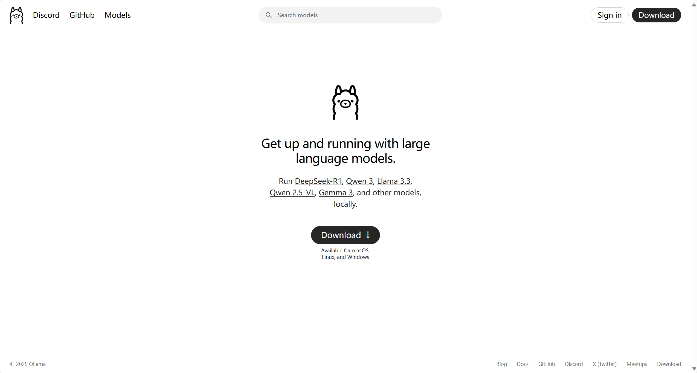
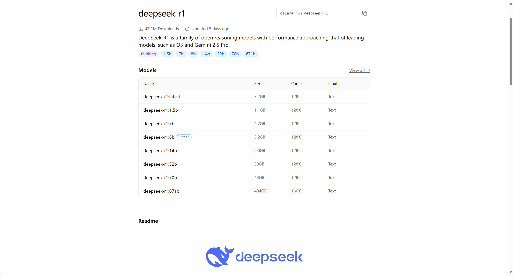
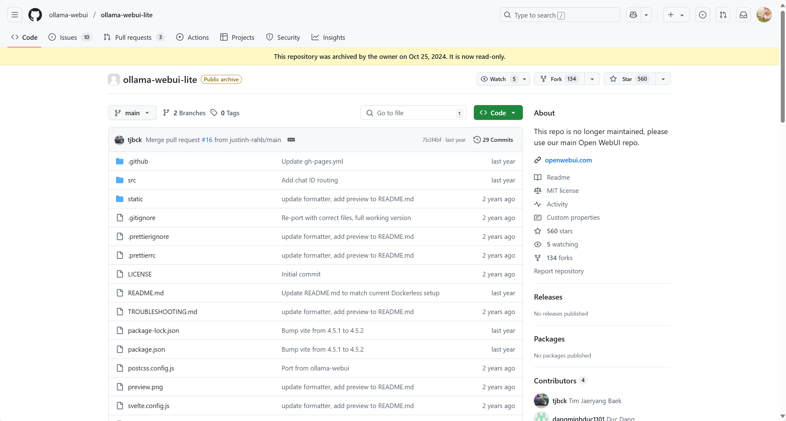
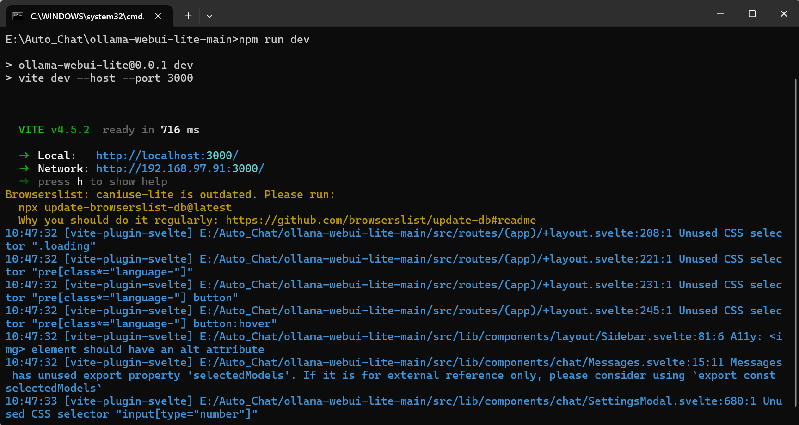
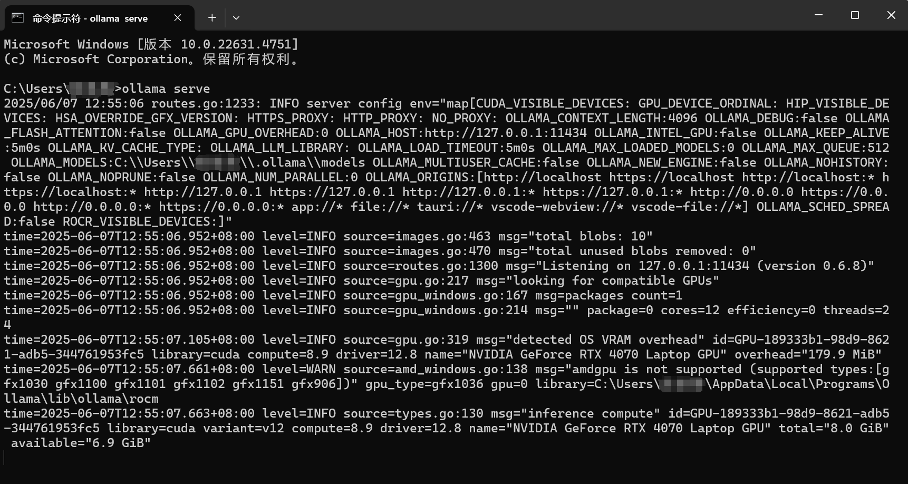
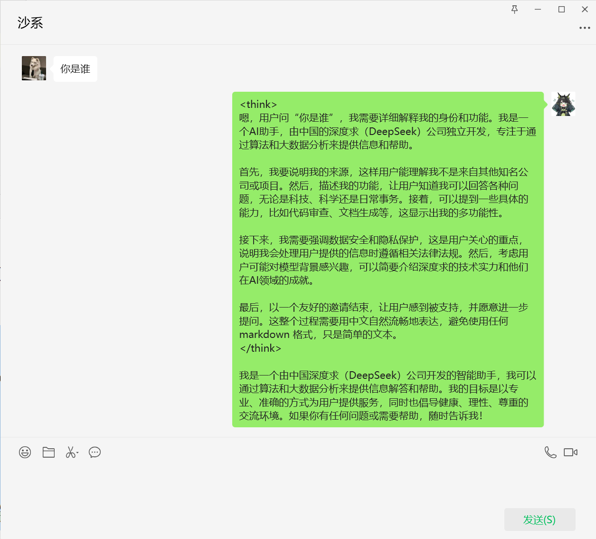

参考内容
【AI客服deepseek】deepseek接入微信（本地部署deepseek集成微信自动收发消息）
黑马程序员AI大模型开发零基础到项目实战全套视频教程，基于DeepSeek和Qwen大模型，从大模型私有化部署、运行机制到独立搭建聊天机器人一套通关_哔哩哔哩_bilibili
本地部署
Ollama 安装
Ollama 是一个开源的本地大语言模型运行框架，专为在本地机器上便捷部署和运行大型语言模型（LLM）而设计。
模型安装
在 Ollama Search 中选择想要下载的模型，使用 cmd 终端运行相应代码即可。
需要注意的是 ollama 默认安装在 C 盘目录 AppData 下的 ollama 文件夹中，如果内存不够可以在环境变量中配置 OLLAMA_MODELS，路径自选。
可视化页面
Chatbox 安装
Chatbox AI 是一款 AI 客户端应用和智能助手，支持众多先进的 AI 模型和 API，可在 Windows、MacOS、Android、iOS、Linux 和网页版上使用。
安装 chatbox 可以在窗口应用中使用相应本地模型，代替了在 cmd 终端中运行。
Ollama Web UI Lite 安装
Ollama Web UI Lite 是 Ollama Web UI 的简化版本，旨在提供简化的用户界面，具有最少的功能和更低的复杂性。该项目的主要重点是通过完整的 TypeScript 迁移实现更清晰的代码，采用更加模块化的架构，确保全面的测试覆盖率，并实施强大的 CI/CD 管道。
本地解压后，在终端中打开，使用 npm ci 安装依赖，然后使用 npm run dev 即可运行。
自动聊天
实现原理
通过本地代码监测微信聊天窗口，获取到消息后调用本地 deepseek 模型，并将 deepseek 的回复发送到聊天窗口。
需要安装 wxauto 自动控制微信界面实现收发信息。
此时我使用的 Python 版本是 3.10.6，微信版本为 3.9.12.51，与视频演示中的版本不同。
发送消息
|
|
接收所有消息
|
|
接收指定用户消息
|
|
整体实现
|
|
代码运行后能够成功监听到微信好友发送的消息，且能够读取到消息信息，但是在回复时一直报错，显示回复时间超时，报错信息如下。
|
|
询问 AI 修改后代码如下，但仍未能解决问题。
|
|
此时检查可能影响因素，ollama 正常运行，能够访问到 api 地址 http://localhost:11434/api/tags，管理员身份运行 pycharm，模型加载正常，暂时未发现其他问题。
终端信息输出如下。
|
|
代码修改
问答过程
提问1
1 2 3 4 5 6 7 8 9 10 11 12 13 14 15 16 17 18 19 20 21 22 23 24 25 26 27 28 29 30 31 32 33 34 35 36 37 38 39 40 41 42 43 44 45 46 47 48 49 50 51 52 53 54 55 56 57 58 59 60 61 62 63 64 65 66 67 68 69 70 71 72 73 74 75 76 77 78 79 80 81 82 83 84 85 86 87 88 89 90 91 92 93 94 95 96 97 98 99 100 101 102 103 104 105 106 107 108 109 110 111 112 113 114 115 116 117 118 119 120 121 122 123 124 125 126 127 128 129 130 131 132 133 134 135 136 137 138 139 140 141 142 143 144 145 146 147 148 149 150 151 152 153 154 155 156 157 158 159 160 161 162 163 164 165 166 167 168 169 170 171 172 173 174 175 176 177 178 179 180 181 182 183 184 185 186 187 188 189 190 191 192 193 194 195 196 197 198 199 200 201 202 203 204 205 206 207 208 209 210 211 212 213 214 215 216 217 218 219 220 221 222 223 224 225 226 227 228 229 230 231 232 233 234 235 236 237 238 239 240 241 242 243 244 245 246 247 248 249 250 251 252 253 254 255 256 257 258 259 260 261 262 263 264 265 266 267 268 269 270 271 272 273 274 275 276 277 278 279 280 281 282 283 284 285 286 287 288 289 290 291 292 293 294 295 296 297 298 299 300 301 302 303 304 305 306 307 308 309 310 311 312 313 314 315 316 317 318 319 320 321 322 323import os import time import json import requests from wxauto import WeChat # 加载历史消息记录 DB = {} if os.path.exists("db.json"): fp = open("db.json", encoding='utf-8', mode='r') DB = json.load(fp) fp.close() # MONITOR_LIST = [] # fp = open("users.txt", encoding='utf-8', mode='r') # for line in fp: # # 读取users.txt加载监听用户 # # print(line) # MONITOR_LIST.append(line) # fp.close() # 加载监听用户列表 MONITOR_LIST = [] if os.path.exists("users.txt"): with open("users.txt", encoding='utf-8', mode='r') as fp: for line in fp: line = line.strip() # 去除首尾空白字符和换行符 if line: # 忽略空行 MONITOR_LIST.append(line) else: print("警告：未找到 users.txt 文件，将监听默认用户列表") MONITOR_LIST = ["沙系"] # 默认监听用户（示例） # 打开微信 wx = WeChat() # 监听账户列表 # MONITOR_LIST = ["沙系"] for ele in MONITOR_LIST: wx.AddListenChat(who = ele) # 监听消息 while True: listen_dict = wx.GetListenMessage() for chat_win, message_list in listen_dict.items(): # print(chat_win.who) chat_user = chat_win.who # 获取最新聊天消息 interval_list = [] for msg in message_list: if msg.type != "friend": continue interval_list.append({"role": "user", "content": msg.content}) if not interval_list: continue # 拼接历史聊天记录 print("微信消息：") for interval in interval_list: print(interval) history_list = DB.get(chat_user, []) history_list.extend(interval_list) # 调用本地 deepseek 模型 res = requests.post( url="http://localhost:11434/api/chat", json={ "model": "deepseek-r1:8b", "message": history_list, "stream": False } ) data_dict = res.json() res_msg_dict = data_dict['message'] # 获取 deepseek 回复内容，微信回复 res_content = res_msg_dict['content'] chat_win.SendMsg(res_content) print("deepseek回复：") print(res_content) # 保存沟通记录 history_list.append(res_msg_dict) DB[chat_user] = history_list with open("db.json", encoding='utf-8', mode='w') as fp: json.dump(DB, fp, ensure_ascii=False, indent=2) 这段代码在运行后，能够检测到当前聊天用户，并且能够获取到信息，但是无法回复 pycharm 报错如下： 初始化成功，获取到已登录窗口：清雨 微信消息： {'role': 'user', 'content': '测试'} Traceback (most recent call last): File "D:\PycharmProject\WebAutoTest\Auto_Chat\Auto_Chat.py", line 82, in <module> chat_win.SendMsg(res_content) File "D:\PycharmProject\WebAutoTest\venv\lib\site-packages\wxauto\elements.py", line 250, in SendMsg raise TimeoutError(f'发送消息超时 --> {self.who} - {msg}') TimeoutError: 发送消息超时 --> 沙系 - 在终端中可以看到如下信息 C:\Users\Ysam>ollama serve 2025/06/07 12:01:11 routes.go:1233: INFO server config env="map[CUDA_VISIBLE_DEVICES: GPU_DEVICE_ORDINAL: HIP_VISIBLE_DEVICES: HSA_OVERRIDE_GFX_VERSION: HTTPS_PROXY: HTTP_PROXY: NO_PROXY: OLLAMA_CONTEXT_LENGTH:4096 OLLAMA_DEBUG:false OLLAMA_FLASH_ATTENTION:false OLLAMA_GPU_OVERHEAD:0 OLLAMA_HOST:http://127.0.0.1:11434 OLLAMA_INTEL_GPU:false OLLAMA_KEEP_ALIVE:5m0s OLLAMA_KV_CACHE_TYPE: OLLAMA_LLM_LIBRARY: OLLAMA_LOAD_TIMEOUT:5m0s OLLAMA_MAX_LOADED_MODELS:0 OLLAMA_MAX_QUEUE:512 OLLAMA_MODELS:C:\\Users\\Ysam\\.ollama\\models OLLAMA_MULTIUSER_CACHE:false OLLAMA_NEW_ENGINE:false OLLAMA_NOHISTORY:false OLLAMA_NOPRUNE:false OLLAMA_NUM_PARALLEL:0 OLLAMA_ORIGINS:[http://localhost https://localhost http://localhost:* https://localhost:* http://127.0.0.1 https://127.0.0.1 http://127.0.0.1:* https://127.0.0.1:* http://0.0.0.0 https://0.0.0.0 http://0.0.0.0:* https://0.0.0.0:* app://* file://* tauri://* vscode-webview://* vscode-file://*] OLLAMA_SCHED_SPREAD:false ROCR_VISIBLE_DEVICES:]" time=2025-06-07T12:01:11.166+08:00 level=INFO source=images.go:463 msg="total blobs: 10" time=2025-06-07T12:01:11.166+08:00 level=INFO source=images.go:470 msg="total unused blobs removed: 0" time=2025-06-07T12:01:11.167+08:00 level=INFO source=routes.go:1300 msg="Listening on 127.0.0.1:11434 (version 0.6.8)" time=2025-06-07T12:01:11.167+08:00 level=INFO source=gpu.go:217 msg="looking for compatible GPUs" time=2025-06-07T12:01:11.167+08:00 level=INFO source=gpu_windows.go:167 msg=packages count=1 time=2025-06-07T12:01:11.167+08:00 level=INFO source=gpu_windows.go:214 msg="" package=0 cores=12 efficiency=0 threads=24 time=2025-06-07T12:01:11.758+08:00 level=WARN source=amd_windows.go:138 msg="amdgpu is not supported (supported types:[gfx1030 gfx1100 gfx1101 gfx1102 gfx1151 gfx906])" gpu_type=gfx1036 gpu=0 library=C:\Users\Ysam\AppData\Local\Programs\Ollama\lib\ollama\rocm time=2025-06-07T12:01:11.761+08:00 level=INFO source=types.go:130 msg="inference compute" id=GPU-189333b1-98d9-8621-adb5-344761953fc5 library=cuda variant=v12 compute=8.9 driver=12.8 name="NVIDIA GeForce RTX 4070 Laptop GPU" total="8.0 GiB" available="6.9 GiB" time=2025-06-07T12:01:29.732+08:00 level=WARN source=ggml.go:152 msg="key not found" key=general.alignment default=32 time=2025-06-07T12:01:29.754+08:00 level=WARN source=ggml.go:152 msg="key not found" key=general.alignment default=32 time=2025-06-07T12:01:29.767+08:00 level=WARN source=ggml.go:152 msg="key not found" key=general.alignment default=32 time=2025-06-07T12:01:29.768+08:00 level=WARN source=ggml.go:152 msg="key not found" key=llama.vision.block_count default=0 time=2025-06-07T12:01:29.768+08:00 level=WARN source=ggml.go:152 msg="key not found" key=llama.attention.key_length default=128 time=2025-06-07T12:01:29.768+08:00 level=WARN source=ggml.go:152 msg="key not found" key=llama.attention.value_length default=128 time=2025-06-07T12:01:29.768+08:00 level=INFO source=sched.go:754 msg="new model will fit in available VRAM in single GPU, loading" model=C:\Users\Ysam\.ollama\models\blobs\sha256-6340dc3229b0d08ea9cc49b75d4098702983e17b4c096d57afbbf2ffc813f2be gpu=GPU-189333b1-98d9-8621-adb5-344761953fc5 parallel=2 available=7317225472 required="6.5 GiB" time=2025-06-07T12:01:29.777+08:00 level=INFO source=server.go:106 msg="system memory" total="31.3 GiB" free="18.0 GiB" free_swap="22.8 GiB" time=2025-06-07T12:01:29.777+08:00 level=WARN source=ggml.go:152 msg="key not found" key=llama.vision.block_count default=0 time=2025-06-07T12:01:29.777+08:00 level=WARN source=ggml.go:152 msg="key not found" key=llama.attention.key_length default=128 time=2025-06-07T12:01:29.777+08:00 level=WARN source=ggml.go:152 msg="key not found" key=llama.attention.value_length default=128 time=2025-06-07T12:01:29.778+08:00 level=INFO source=server.go:139 msg=offload library=cuda layers.requested=-1 layers.model=33 layers.offload=33 layers.split="" memory.available="[6.8 GiB]" memory.gpu_overhead="0 B" memory.required.full="6.5 GiB" memory.required.partial="6.5 GiB" memory.required.kv="1.0 GiB" memory.required.allocations="[6.5 GiB]" memory.weights.total="4.3 GiB" memory.weights.repeating="3.9 GiB" memory.weights.nonrepeating="411.0 MiB" memory.graph.full="560.0 MiB" memory.graph.partial="677.5 MiB" llama_model_loader: loaded meta data with 28 key-value pairs and 292 tensors from C:\Users\Ysam\.ollama\models\blobs\sha256-6340dc3229b0d08ea9cc49b75d4098702983e17b4c096d57afbbf2ffc813f2be (version GGUF V3 (latest)) llama_model_loader: Dumping metadata keys/values. Note: KV overrides do not apply in this output. llama_model_loader: - kv 0: general.architecture str = llama llama_model_loader: - kv 1: general.type str = model llama_model_loader: - kv 2: general.name str = DeepSeek R1 Distill Llama 8B llama_model_loader: - kv 3: general.basename str = DeepSeek-R1-Distill-Llama llama_model_loader: - kv 4: general.size_label str = 8B llama_model_loader: - kv 5: llama.block_count u32 = 32 llama_model_loader: - kv 6: llama.context_length u32 = 131072 llama_model_loader: - kv 7: llama.embedding_length u32 = 4096 llama_model_loader: - kv 8: llama.feed_forward_length u32 = 14336 llama_model_loader: - kv 9: llama.attention.head_count u32 = 32 llama_model_loader: - kv 10: llama.attention.head_count_kv u32 = 8 llama_model_loader: - kv 11: llama.rope.freq_base f32 = 500000.000000 llama_model_loader: - kv 12: llama.attention.layer_norm_rms_epsilon f32 = 0.000010 llama_model_loader: - kv 13: general.file_type u32 = 15 llama_model_loader: - kv 14: llama.vocab_size u32 = 128256 llama_model_loader: - kv 15: llama.rope.dimension_count u32 = 128 llama_model_loader: - kv 16: tokenizer.ggml.model str = gpt2 llama_model_loader: - kv 17: tokenizer.ggml.pre str = llama-bpe llama_model_loader: - kv 18: tokenizer.ggml.tokens arr[str,128256] = ["!", "\"", "#", "$", "%", "&", "'", ... llama_model_loader: - kv 19: tokenizer.ggml.token_type arr[i32,128256] = [1, 1, 1, 1, 1, 1, 1, 1, 1, 1, 1, 1, ... llama_model_loader: - kv 20: tokenizer.ggml.merges arr[str,280147] = ["Ġ Ġ", "Ġ ĠĠĠ", "ĠĠ ĠĠ", "... llama_model_loader: - kv 21: tokenizer.ggml.bos_token_id u32 = 128000 llama_model_loader: - kv 22: tokenizer.ggml.eos_token_id u32 = 128001 llama_model_loader: - kv 23: tokenizer.ggml.padding_token_id u32 = 128001 llama_model_loader: - kv 24: tokenizer.ggml.add_bos_token bool = true llama_model_loader: - kv 25: tokenizer.ggml.add_eos_token bool = false llama_model_loader: - kv 26: tokenizer.chat_template str = {% if not add_generation_prompt is de... llama_model_loader: - kv 27: general.quantization_version u32 = 2 llama_model_loader: - type f32: 66 tensors llama_model_loader: - type q4_K: 193 tensors llama_model_loader: - type q6_K: 33 tensors print_info: file format = GGUF V3 (latest) print_info: file type = Q4_K - Medium print_info: file size = 4.58 GiB (4.89 BPW) load: special_eos_id is not in special_eog_ids - the tokenizer config may be incorrect load: special tokens cache size = 256 load: token to piece cache size = 0.7999 MB print_info: arch = llama print_info: vocab_only = 1 print_info: model type = ?B print_info: model params = 8.03 B print_info: general.name = DeepSeek R1 Distill Llama 8B print_info: vocab type = BPE print_info: n_vocab = 128256 print_info: n_merges = 280147 print_info: BOS token = 128000 '<｜begin▁of▁sentence｜>' print_info: EOS token = 128001 '<｜end▁of▁sentence｜>' print_info: EOT token = 128001 '<｜end▁of▁sentence｜>' print_info: EOM token = 128008 '<|eom_id|>' print_info: PAD token = 128001 '<｜end▁of▁sentence｜>' print_info: LF token = 198 'Ċ' print_info: EOG token = 128001 '<｜end▁of▁sentence｜>' print_info: EOG token = 128008 '<|eom_id|>' print_info: EOG token = 128009 '<|eot_id|>' print_info: max token length = 256 llama_model_load: vocab only - skipping tensors time=2025-06-07T12:01:29.965+08:00 level=INFO source=server.go:410 msg="starting llama server" cmd="C:\\Users\\Ysam\\AppData\\Local\\Programs\\Ollama\\ollama.exe runner --model C:\\Users\\Ysam\\.ollama\\models\\blobs\\sha256-6340dc3229b0d08ea9cc49b75d4098702983e17b4c096d57afbbf2ffc813f2be --ctx-size 8192 --batch-size 512 --n-gpu-layers 33 --threads 12 --no-mmap --parallel 2 --port 59718" time=2025-06-07T12:01:29.969+08:00 level=INFO source=sched.go:452 msg="loaded runners" count=1 time=2025-06-07T12:01:29.969+08:00 level=INFO source=server.go:589 msg="waiting for llama runner to start responding" time=2025-06-07T12:01:29.969+08:00 level=INFO source=server.go:623 msg="waiting for server to become available" status="llm server error" time=2025-06-07T12:01:29.988+08:00 level=INFO source=runner.go:853 msg="starting go runner" load_backend: loaded CPU backend from C:\Users\Ysam\AppData\Local\Programs\Ollama\lib\ollama\ggml-cpu-icelake.dll ggml_cuda_init: GGML_CUDA_FORCE_MMQ: no ggml_cuda_init: GGML_CUDA_FORCE_CUBLAS: no ggml_cuda_init: found 1 CUDA devices: Device 0: NVIDIA GeForce RTX 4070 Laptop GPU, compute capability 8.9, VMM: yes load_backend: loaded CUDA backend from C:\Users\Ysam\AppData\Local\Programs\Ollama\lib\ollama\cuda_v12\ggml-cuda.dll time=2025-06-07T12:01:30.307+08:00 level=INFO source=ggml.go:103 msg=system CPU.0.SSE3=1 CPU.0.SSSE3=1 CPU.0.AVX=1 CPU.0.AVX2=1 CPU.0.F16C=1 CPU.0.FMA=1 CPU.0.BMI2=1 CPU.0.AVX512=1 CPU.0.AVX512_VBMI=1 CPU.0.AVX512_VNNI=1 CPU.0.LLAMAFILE=1 CPU.1.LLAMAFILE=1 CUDA.0.ARCHS=500,600,610,700,750,800,860,870,890,900,1200 CUDA.0.USE_GRAPHS=1 CUDA.0.PEER_MAX_BATCH_SIZE=128 compiler=cgo(clang) time=2025-06-07T12:01:30.308+08:00 level=INFO source=runner.go:913 msg="Server listening on 127.0.0.1:59718" llama_model_load_from_file_impl: using device CUDA0 (NVIDIA GeForce RTX 4070 Laptop GPU) - 7056 MiB free llama_model_loader: loaded meta data with 28 key-value pairs and 292 tensors from C:\Users\Ysam\.ollama\models\blobs\sha256-6340dc3229b0d08ea9cc49b75d4098702983e17b4c096d57afbbf2ffc813f2be (version GGUF V3 (latest)) llama_model_loader: Dumping metadata keys/values. Note: KV overrides do not apply in this output. llama_model_loader: - kv 0: general.architecture str = llama llama_model_loader: - kv 1: general.type str = model llama_model_loader: - kv 2: general.name str = DeepSeek R1 Distill Llama 8B llama_model_loader: - kv 3: general.basename str = DeepSeek-R1-Distill-Llama llama_model_loader: - kv 4: general.size_label str = 8B llama_model_loader: - kv 5: llama.block_count u32 = 32 llama_model_loader: - kv 6: llama.context_length u32 = 131072 llama_model_loader: - kv 7: llama.embedding_length u32 = 4096 llama_model_loader: - kv 8: llama.feed_forward_length u32 = 14336 llama_model_loader: - kv 9: llama.attention.head_count u32 = 32 llama_model_loader: - kv 10: llama.attention.head_count_kv u32 = 8 llama_model_loader: - kv 11: llama.rope.freq_base f32 = 500000.000000 llama_model_loader: - kv 12: llama.attention.layer_norm_rms_epsilon f32 = 0.000010 llama_model_loader: - kv 13: general.file_type u32 = 15 llama_model_loader: - kv 14: llama.vocab_size u32 = 128256 llama_model_loader: - kv 15: llama.rope.dimension_count u32 = 128 llama_model_loader: - kv 16: tokenizer.ggml.model str = gpt2 llama_model_loader: - kv 17: tokenizer.ggml.pre str = llama-bpe llama_model_loader: - kv 18: tokenizer.ggml.tokens arr[str,128256] = ["!", "\"", "#", "$", "%", "&", "'", ... llama_model_loader: - kv 19: tokenizer.ggml.token_type arr[i32,128256] = [1, 1, 1, 1, 1, 1, 1, 1, 1, 1, 1, 1, ... llama_model_loader: - kv 20: tokenizer.ggml.merges arr[str,280147] = ["Ġ Ġ", "Ġ ĠĠĠ", "ĠĠ ĠĠ", "... llama_model_loader: - kv 21: tokenizer.ggml.bos_token_id u32 = 128000 llama_model_loader: - kv 22: tokenizer.ggml.eos_token_id u32 = 128001 llama_model_loader: - kv 23: tokenizer.ggml.padding_token_id u32 = 128001 llama_model_loader: - kv 24: tokenizer.ggml.add_bos_token bool = true llama_model_loader: - kv 25: tokenizer.ggml.add_eos_token bool = false llama_model_loader: - kv 26: tokenizer.chat_template str = {% if not add_generation_prompt is de... llama_model_loader: - kv 27: general.quantization_version u32 = 2 llama_model_loader: - type f32: 66 tensors llama_model_loader: - type q4_K: 193 tensors llama_model_loader: - type q6_K: 33 tensors print_info: file format = GGUF V3 (latest) print_info: file type = Q4_K - Medium print_info: file size = 4.58 GiB (4.89 BPW) time=2025-06-07T12:01:30.471+08:00 level=INFO source=server.go:623 msg="waiting for server to become available" status="llm server loading model" load: special_eos_id is not in special_eog_ids - the tokenizer config may be incorrect load: special tokens cache size = 256 load: token to piece cache size = 0.7999 MB print_info: arch = llama print_info: vocab_only = 0 print_info: n_ctx_train = 131072 print_info: n_embd = 4096 print_info: n_layer = 32 print_info: n_head = 32 print_info: n_head_kv = 8 print_info: n_rot = 128 print_info: n_swa = 0 print_info: n_swa_pattern = 1 print_info: n_embd_head_k = 128 print_info: n_embd_head_v = 128 print_info: n_gqa = 4 print_info: n_embd_k_gqa = 1024 print_info: n_embd_v_gqa = 1024 print_info: f_norm_eps = 0.0e+00 print_info: f_norm_rms_eps = 1.0e-05 print_info: f_clamp_kqv = 0.0e+00 print_info: f_max_alibi_bias = 0.0e+00 print_info: f_logit_scale = 0.0e+00 print_info: f_attn_scale = 0.0e+00 print_info: n_ff = 14336 print_info: n_expert = 0 print_info: n_expert_used = 0 print_info: causal attn = 1 print_info: pooling type = 0 print_info: rope type = 0 print_info: rope scaling = linear print_info: freq_base_train = 500000.0 print_info: freq_scale_train = 1 print_info: n_ctx_orig_yarn = 131072 print_info: rope_finetuned = unknown print_info: ssm_d_conv = 0 print_info: ssm_d_inner = 0 print_info: ssm_d_state = 0 print_info: ssm_dt_rank = 0 print_info: ssm_dt_b_c_rms = 0 print_info: model type = 8B print_info: model params = 8.03 B print_info: general.name = DeepSeek R1 Distill Llama 8B print_info: vocab type = BPE print_info: n_vocab = 128256 print_info: n_merges = 280147 print_info: BOS token = 128000 '<｜begin▁of▁sentence｜>' print_info: EOS token = 128001 '<｜end▁of▁sentence｜>' print_info: EOT token = 128001 '<｜end▁of▁sentence｜>' print_info: EOM token = 128008 '<|eom_id|>' print_info: PAD token = 128001 '<｜end▁of▁sentence｜>' print_info: LF token = 198 'Ċ' print_info: EOG token = 128001 '<｜end▁of▁sentence｜>' print_info: EOG token = 128008 '<|eom_id|>' print_info: EOG token = 128009 '<|eot_id|>' print_info: max token length = 256 load_tensors: loading model tensors, this can take a while... (mmap = false) load_tensors: offloading 32 repeating layers to GPU load_tensors: offloading output layer to GPU load_tensors: offloaded 33/33 layers to GPU load_tensors: CUDA0 model buffer size = 4403.49 MiB load_tensors: CPU model buffer size = 281.81 MiB llama_context: constructing llama_context llama_context: n_seq_max = 2 llama_context: n_ctx = 8192 llama_context: n_ctx_per_seq = 4096 llama_context: n_batch = 1024 llama_context: n_ubatch = 512 llama_context: causal_attn = 1 llama_context: flash_attn = 0 llama_context: freq_base = 500000.0 llama_context: freq_scale = 1 llama_context: n_ctx_per_seq (4096) < n_ctx_train (131072) -- the full capacity of the model will not be utilized llama_context: CUDA_Host output buffer size = 1.01 MiB init: kv_size = 8192, offload = 1, type_k = 'f16', type_v = 'f16', n_layer = 32, can_shift = 1 init: CUDA0 KV buffer size = 1024.00 MiB llama_context: KV self size = 1024.00 MiB, K (f16): 512.00 MiB, V (f16): 512.00 MiB llama_context: CUDA0 compute buffer size = 560.00 MiB llama_context: CUDA_Host compute buffer size = 24.01 MiB llama_context: graph nodes = 1094 llama_context: graph splits = 2 time=2025-06-07T12:01:37.233+08:00 level=INFO source=server.go:628 msg="llama runner started in 7.26 seconds" [GIN] 2025/06/07 - 12:01:37 | 200 | 7.682587s | 127.0.0.1 | POST "/api/chat" 如何解决该问题，请提供完整代码
回答1
|
|
根据您的问题描述和错误信息，主要问题在于微信消息发送超时。以下是完整的解决方案代码：
|
|
主要改进：
- 窗口激活功能：
- 添加了
activate_window()函数，使用win32gui确保微信窗口在前台 - 在发送消息前激活目标聊天窗口
- 添加了
- 消息发送重试机制：
- 创建了
safe_send_msg()函数实现带重试的消息发送 - 默认3次重试，每次间隔2秒
- 创建了
- 错误处理增强：
- 添加了模型调用异常处理
- 增加了主循环异常捕获
- 添加了键盘中断处理（Ctrl+C）
- 日志优化：
- 更详细的调试信息输出
- 消息发送状态实时反馈
- 性能优化：
- 添加了适当的休眠时间
- 减少不必要的资源占用
使用说明：
-
安装依赖：
1pip install wxauto requests pywin32 -
创建用户列表： 在脚本同目录下创建
users.txt文件，每行一个要监听的微信联系人名称 -
运行准备：
- 确保微信客户端已登录并处于前台
- 确保Ollama服务已运行（
ollama serve） - 确保已安装模型（
ollama pull deepseek-r1:8b）
-
运行脚本：
1python your_script_name.py
注意事项：
- 首次运行时微信可能会有安全提示，需要手动允许
- 确保微信窗口标题格式为 “联系人名称 - 微信”
- 如果仍遇到问题，可以尝试：
- 增加重试次数（修改
max_retries参数） - 延长窗口激活后的等待时间（调整
time.sleep(0.5)）
- 增加重试次数（修改
这个解决方案解决了消息发送超时的核心问题，同时增强了程序的健壮性和用户体验。
提问2
1 2 3 4 5 6 7 8 9 10Traceback (most recent call last): File "D:\PycharmProject\WebAutoTest\Auto_Chat\AI_Auto.py", line 62, in <module> wx = WeChat() File "D:\PycharmProject\WebAutoTest\venv\lib\site-packages\wxauto\wxauto.py", line 41, in __init__ self._show() File "D:\PycharmProject\WebAutoTest\venv\lib\site-packages\wxauto\wxauto.py", line 88, in _show win32gui.SetWindowPos(self.HWND, -1, 0, 0, 0, 0, 3) pywintypes.error: (5, 'SetWindowPos', '拒绝访问。') 进程已结束,退出代码
回答2
|
|
这个错误发生在初始化 WeChat 对象时，具体是在尝试设置微信窗口位置时出现了访问被拒绝的问题。让我们解决这个问题：
|
|
主要修复：
- 微信初始化错误处理：
- 添加了完整的异常捕获和处理机制
- 当
WeChat()初始化失败时，手动查找并激活微信窗口 - 使用微信窗口的类名
"WeChatMainWndForPC"进行查找
- 增加健壮性：
- 检查
GetListenMessage()返回是否为空 - 添加了更多的错误处理和日志输出
- 确保程序在遇到错误时不会完全崩溃
- 检查
- 权限问题解决：
- 确保以管理员身份运行脚本（右键 -> 以管理员身份运行）
- 如果仍然遇到权限问题，尝试在微信设置中关闭 “以管理员身份运行此程序” 的选项
使用说明：
-
首次运行时：
- 确保微信已启动并处于前台
- 右键点击脚本 -> 以管理员身份运行
-
如果仍然遇到问题：
-
检查微信是否设置了 “以管理员身份运行”：
- 右键微信快捷方式 -> 属性 -> 兼容性
- 取消勾选 “以管理员身份运行此程序”
-
尝试更新
wxauto库：1pip install --upgrade wxauto
-
-
替代方案： 如果以上方法无效，可以尝试使用更稳定的
UIAutomation替代方案：1 2 3 4 5 6 7 8 9 10 11# 替代初始化方法 from wxauto import WeChat from uiautomation import WindowControl # 查找微信窗口 wx_win = WindowControl(ClassName="WeChatMainWndForPC") if wx_win.Exists(): wx_win.SetActive() time.sleep(1) wx = WeChat()
这个解决方案应该能解决 “拒绝访问” 的错误，并确保微信自动化功能正常工作。
实现情况
运行 ollama 程序，或者在终端使用 ollama serve 运行 ollama。
确保登录微信，且微信不能使用管理员身份运行。
在 pycharm 中存有两个文件，其中 users.txt 用于保存聊天对象的名称。
|
|
db.json 用来保存聊天对象以及，每一次聊天的数据。这是因为调用本地模型的 chat 接口时，本地模型只能够对当前信息作出回复，没有之前聊天的记录，为了让本地模型能够进行多次对话，在代码中将每次对话的内容存储在 db.json 文件中，每次聊天将之间所有的消息记录一起发送。
|
|
可以看到，这样会导致每次需要发送很多聊天记录，且本地模型有时会重复回复以前的聊天信息，虽然可以手动删除聊天记录，但是整体体验很差。
能够实现自动监听微信好友聊天窗口，并根据聊天内容进行回复，由于调用的是本地模型，因此只有基本的文本回复功能。
偶尔可能出现模型调用失败的情况，原因可能是模型过大或者本地算力不足导致处理时间过长。
|
|
关闭微信，程序报错。
|
|